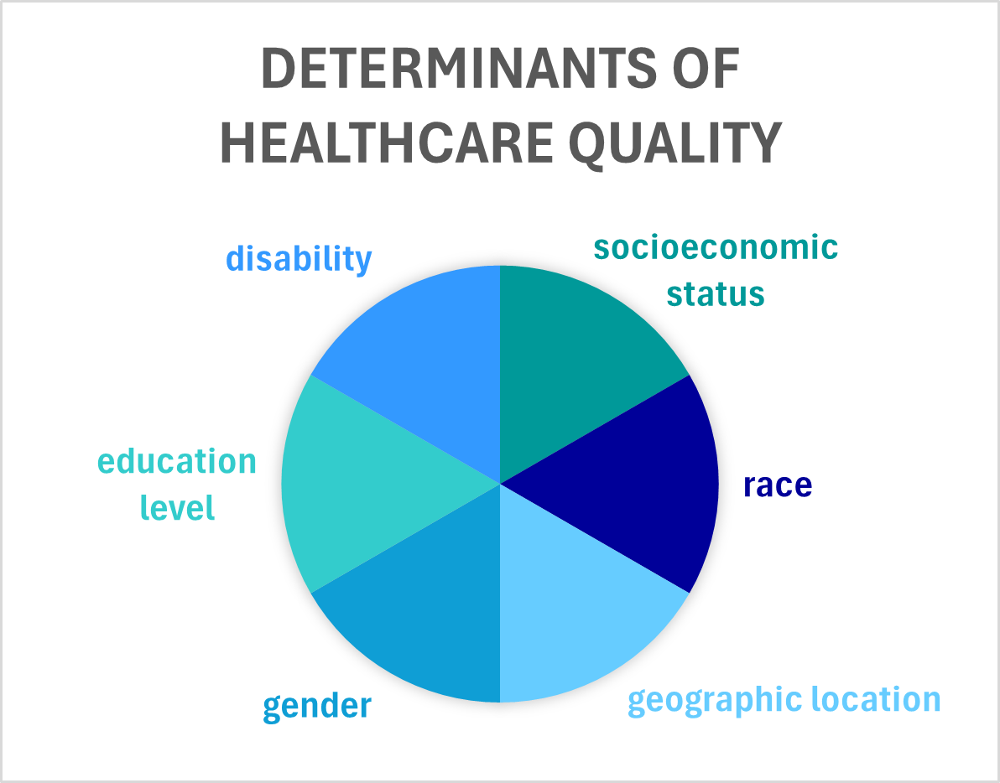

Take a Look:
Introduction
A healthcare disparity refers to the uneven distribution of healthcare services and outcomes among different population groups, often driven by social, economic, environmental, or cultural disadvantages. These disparities can manifest in limited access
to care, variations in the quality of treatment, and differences in health outcomes, influenced by factors such as socioeconomic status, race, geographic location, gender, education level, sexual orientation, and disability.
This website will explore the effects of socioeconomic status, race, geographic location, gender, education level, and disabilities on the quality of healthcare one recieves. Please note that the website
links provided to expand your knowledge are not the only resources available. In addition, please find opportunities to get involved, support, and fund these causes.
"Implicit bias is the single most important determinant of health and health care disparities."
-Dayna Bowen Matthew
"Of all the forms of inequality, injustice in health care is the most shocking and inhuman because it often results in physical death."
-Martin Luther King Jr.
"Medicine should be viewed as social justice work in a world that is so sick and so riven by inequities."
-Paul Farmer
"Public health is a powerful tool to level that playing field, to bend the arc of our country away from distrust and disparities and back towards equity and justice."
-Leana S. Wen